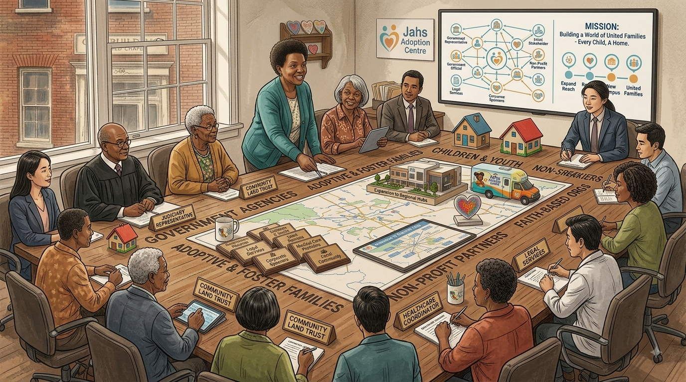

Our History

Founded in 2018 in Gqeberha (formerly Port Elizabeth), Eastern Cape, Jahs Adoption Centre was established to respond to the growing number of abandoned, vulnerable, and orphaned children across the Nelson Mandela Bay region, including Kariega and Despatch.
Our journey began in Korsten, where we launched our first small warehouse to help children living on the streets. As the need grew, we moved to a new, larger facility in the Walmer area. This rebuilt warehouse is where our children can now safely eat, sleep, and learn in an improved environment.
Clear Information, Child-Centred Care
Children’s wellbeing and privacy should come first. This website does not publish children’s names, personal histories, or profiles.
The information here is a general introduction, not a decision on anyone’s eligibility or a promise of a particular outcome. Adoption steps, timeframes, and costs vary by case and should be confirmed with the responsible adoption agency.
Before beginning a formal application or making a financial commitment, ask the organisation handling your enquiry to explain its current role and authorisation, any fees, how your information will be handled, and what happens next. We do not publish unverified registration details or financial figures on this site.
Mission Statement

Our mission is to provide support to children who were abandoned and forgotten, in the hopes of finding them a loving new family. We decided it was time for a change when we noticed the high amount of children living on the street, and we are dedicated to helping them find their forever homes.
Vision Statement

We envision a caring orphanage where children grow up in a safe place, are cared for in a learning-rich environment, and are assisted in the hopes of finding a new home one day.
Where Our Story Began

Jahs Adoption Centre began in 2018 with a small warehouse in Korsten, Gqeberha, created to offer practical support to children living on the streets. As more children needed a safe place, the centre moved to a larger facility in Walmer.
That growth shaped the work we do today: providing a welcoming place where children can eat, sleep, learn, and receive caring support while the team helps them move toward a secure family life.